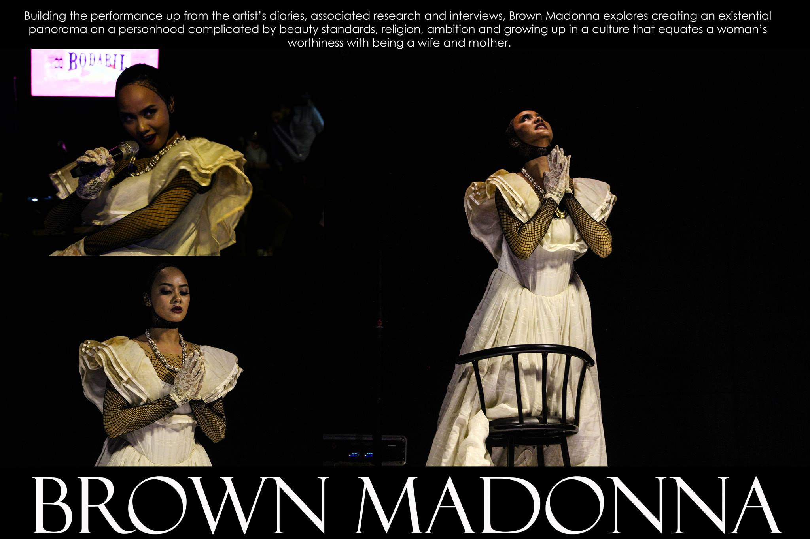
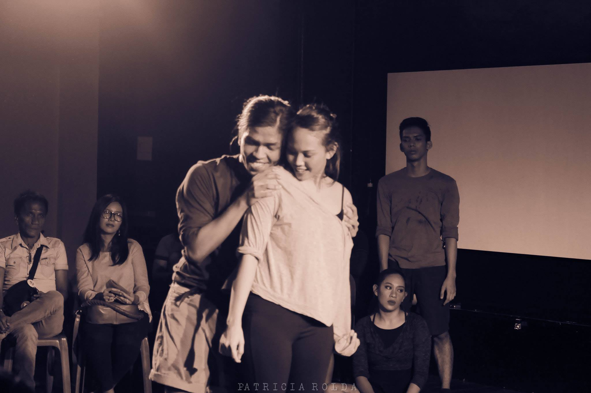
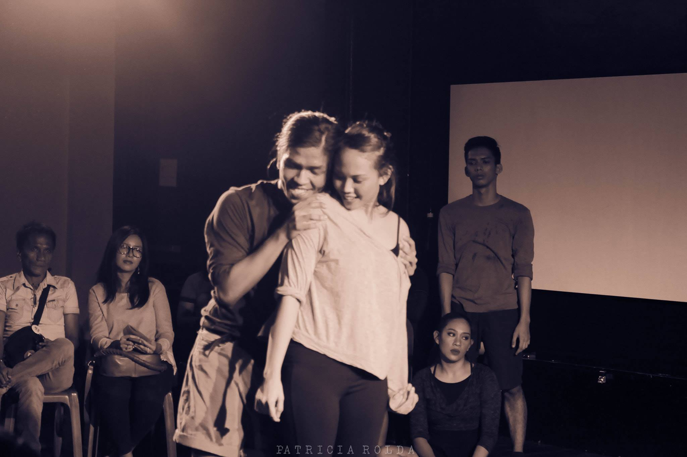

BROWN MADONNA
Brown Madonna is a devised dance theatre piece that investigates the complexity and elusiveness of identity as it interweaves personal and cultural narratives. Set in a music concert, contemporary dance artist Ea Torrado attempts to make sense of her personal experiences and history through the songs of famous pop icon, Madonna. Building the performance up from the artist’s diaries, associated research and interviews, Brown Madonna explores creating an existential panorama on a personhood complicated by beauty standards, religion, ambition and growing up in a culture that equates a woman’s worthiness with being a wife and mother.
Direction and choreography: Ea Torrado
Performance: Daloy Dance Company and Ea Torrado
Concept, Direction and Performance: Ea Torrado
Choreography: Daloy Dance Company
Video Design: Russ Ligtas
Costumes: Jodinand Aguillon Production
Team: Daloy Dance Company
Music: Madonna Music
Editing: Buboy Raquitico
Photographer:Patricia Rolda


PIECES OF ME
Pieces of me delves into the universal struggle of personal relationships. A re-imagining of past works, this 1 hour long devised piece melds together the strongest pas de deuxs of choreographer and artistic director, Ea Torrado. The ensemble amalgamates the piece using structured improvisation. The work is tailor made for an in-the-round, personal experience. A timeline of moments of love, hurt, happiness, and self-discovery made to be shared – this work is incredibly approachable in its contemporary, human and gestural movement language.
This video is an excerpt from Daloy's show Mga Sayaw ng Paghilom at PETA Theatre Center November 2015.
Lights: Katsch Catoy
Live Music Improvisation: Dale Adeva
Dancers: Daloy Dance Company
Director and Choreographer: Ea Torrado
Photography: Patricia Rolda

 


UNEARTHING
Unearthing by Ea Torrado and Daloy Dance Company explores the profound entanglements of the carnal and the spiritual. An experiment in transcendence from the physical to more vulnerable states of inner being (loób), the three-person piece uses movement as a form of attunement to a deeper inward contact.
Inspired by Somatics, trance improvisation, and contemporary practices of Babaylan philosophy, Daloy dance artists Buboy Raquitico, Zyda Baaya, and Jomari Cruz transcend conventional dance-making and performance through chanting and intuitive movement. Chant artist and singer Anjeline de Dios, percussionist and Kulintang-player Tusa Montes and award-winning lights designer Katsch Catoy envelop the piece in a powerful and uninhibited setting.
In expanding the inner space of loób, the three bodies reanimate the consciousness-shifting modality of the Babaylan—the pre-colonial shamanic priestesses of the Philippine islands. Unearthing transforms performance into community ritual, foregrounding the social being as a sacred being.
Unearthing premiered at the 2015 Karnabal Festival: Social and Performance Innovations. Wanggo Gallaga of the Manila Bulletin writes that the piece showcases Daloy's distinct orientation “away from the conventional idea of what contemporary dancing is expected to be. Unafraid to explore awkward shapes or deal with simplistic narratives, the Daloy Dance Company presses forward in their offering of a very different kind of contemporary dance show for the Filipino audience.”
Dancers: Daloy Dance Company
Director and Choreographer: Ea Torrado
Photography: Patricia Rolda